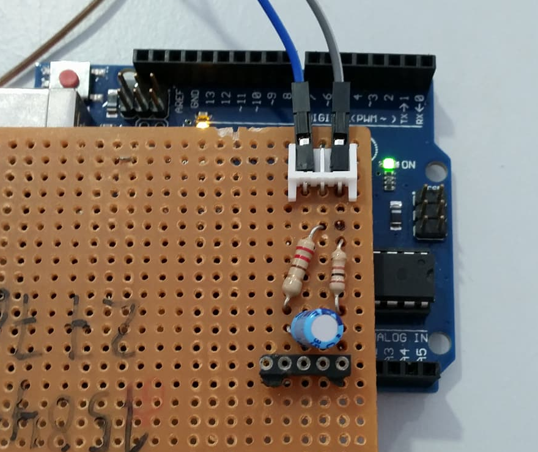
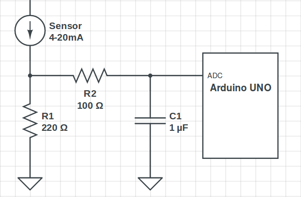
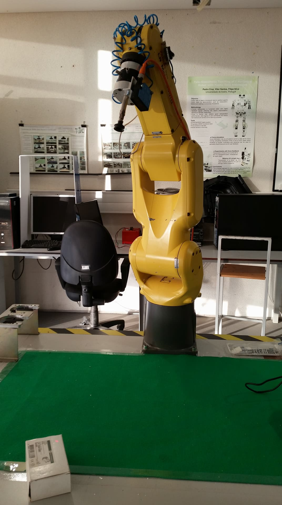
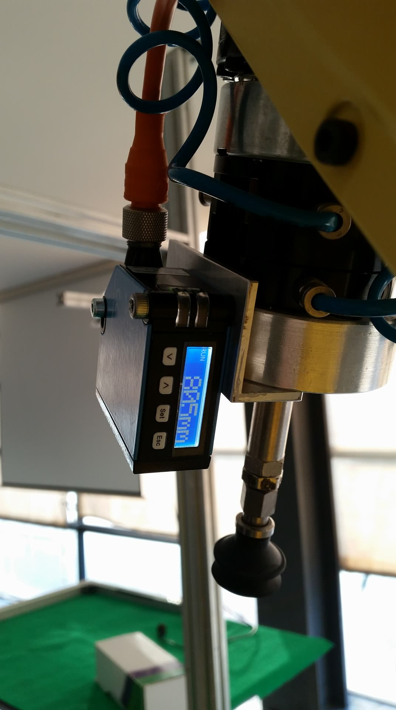
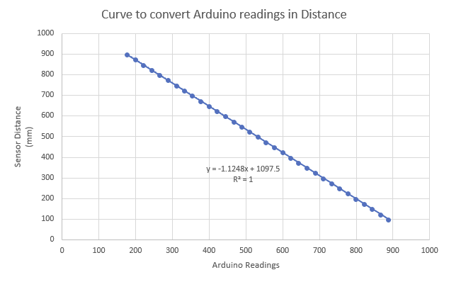
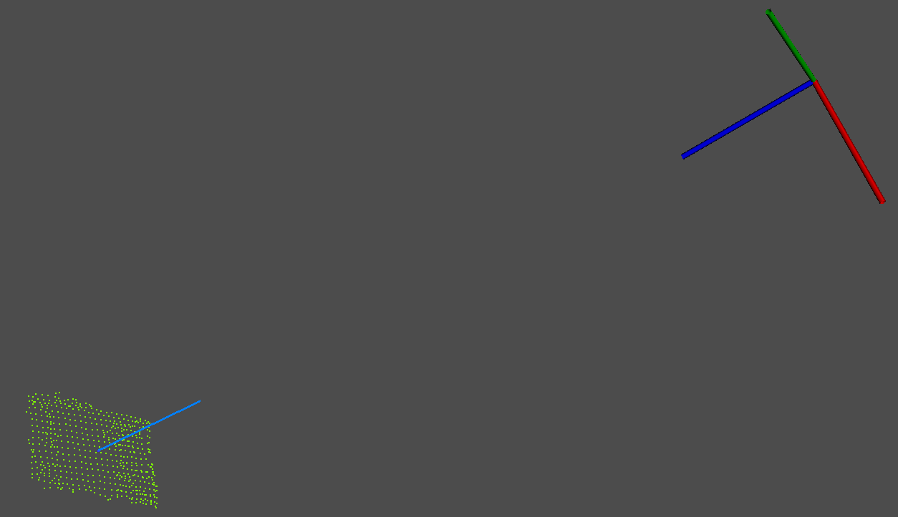

In order to carry on the the work from last week on the laser sensor, it was necessary to determine the most suitable equation to converte the output signal of the sensor into a distance. To do so I had to convert the current output signal into a voltage output signal with a 220Ω resistor, and also use a low-pass filter to remove the noise. This filter only allows low frequency signals from 0Hz to its cut-off frequency (ƒc) point to pass while blocking those any higher. The cuf-off frequency is calculated with the following equation:
\[ƒc = {1 \over 2\pi RC}.\]
The first circuit used to convert the output signal, and its schematics are represented below.
 
While installing the sensor in the robot, which can be seen in the next pictures, I decided to limit the sensor measurements to a maximum and a minimum. Since the sensor will probably not be so far from the object, as shown in the picture, when measuring with precision the distance to its grasping point, I set the minimum to 100mm and the maximum to 900mm. This limits can be changed in the future if necessary.
 
After gathering some analysis with this filter which as a cut-off frequency of 1592Hz, I obtained the following curve with the corresponding equation.

After changing the Arduino code and tested this equation I got satisfactory results, but not perfect when considering that I want to have as much precision as possible. Therefore I probably have to change my circuit in order to have a lower cut-off frequency and redo all the process and the tests.
Processing the point cloudIn this past two weeks I also calibrated the intrinsic parameters of the Kinect and created a launch file that runs all the necessary programs to process and visualize the point cloud acquired by the Kinect live. This launch file already includes the respective .yaml files to calibrate the rgb and the depth of the sensor.
Using the recorded rosbag I continued to process the point cloud and was able to determine the centroid of a simple box and its normal. To do so I started by calculating all the normals of the entire surface and determine the center of it. Afterwards it was necessary to define which of the points of the point cloud was closer to the center of the surface and determine its corresponding normal. The visualization of the centroid and its normal is shown below.
